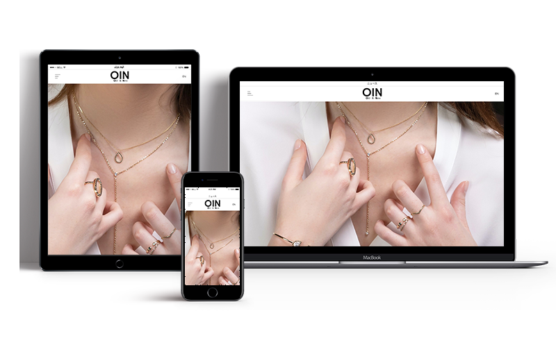
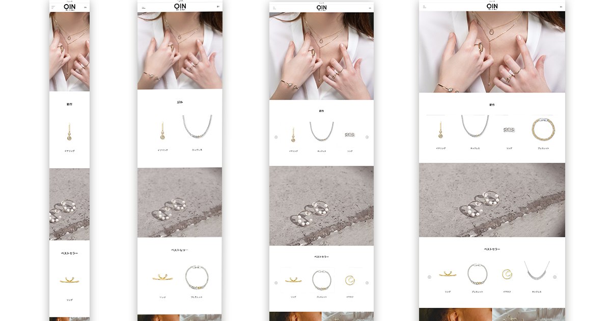

クライアントの要望
海外へ進出するため、ウェブサイトのリニューアル及び英語バージョンの追加作成
・シンプルで見やすいと共に高級感がある: 写真がメインで、文字が少なめにする。また、レイアウトのカラーは基本モノトーンにする。
・スマートフォンにも対応: レスポンシブデザインを提供する。
・SNSとの連携: FacebookやInstagramなどのSNSアカウントを開設し、最新情報の発信やフォロワーとのコミュニケーションを図ることで、ブランドの認知度向上につなげる。
工夫点
- ①レスポンシブ

- ②ナビゲーション
- ③商品及び着用の写真 → 詳細ページ
デザインコンセプト
大きめの写真とシンプルなレイアウトを使うことで、ブランドの世界観・高級感と商品の魅力を伝える。